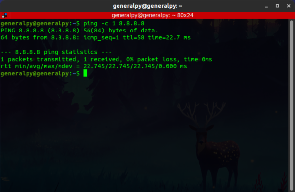
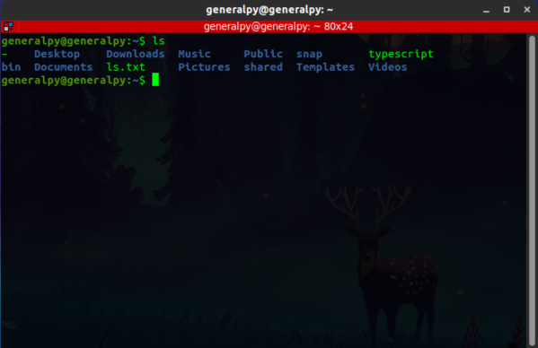
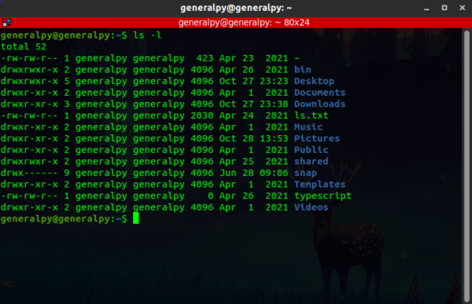
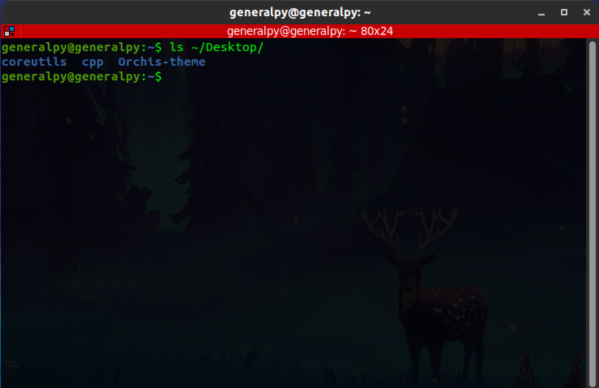
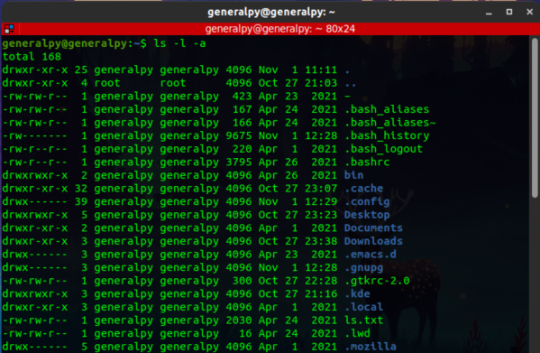
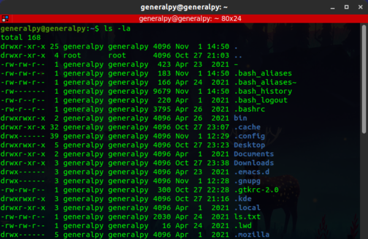
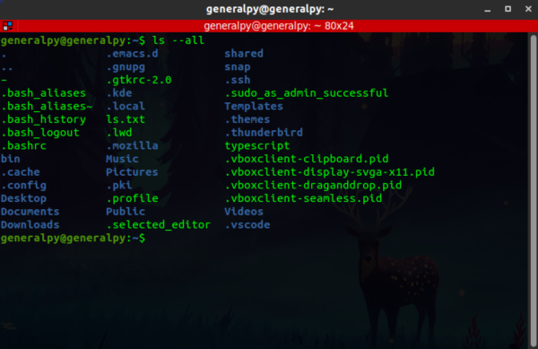

All linux commands follow a specific command structure/syntax which is :-
commandName [-options] [--options in long form] [arguments]
#values in square brackets are optional and depends on command to command
Above code block shows standard way to write a linux command. We first write command itself, then command options which vary from command to command and then command arguments which also vary from command to command.

Here command name is ping, -c is option 1 is option argument and 8.8.8.8 is command argument.

Here ls command which lists file system(directories and files) is used without any argument or option.

Here ls command is used with the option -l but without any argument.

Here ls command is used with argument but no option.
There are different ways to write an option and these ways also depend on command.
One way is to use dash(-) and write short form for the option. This method can also be used to group different options together with 1 dash.

Here 2 options l and a are used with short form method, they are used individually here.

Both options l and a grouped together in single dash.
Second method is to use double dash(--) and then full form for the option.

Note :- Above methods are totally command dependent.
Commands can also be written in different way like command arguments options, this will also do the same thing but it is better to stick to standard way.